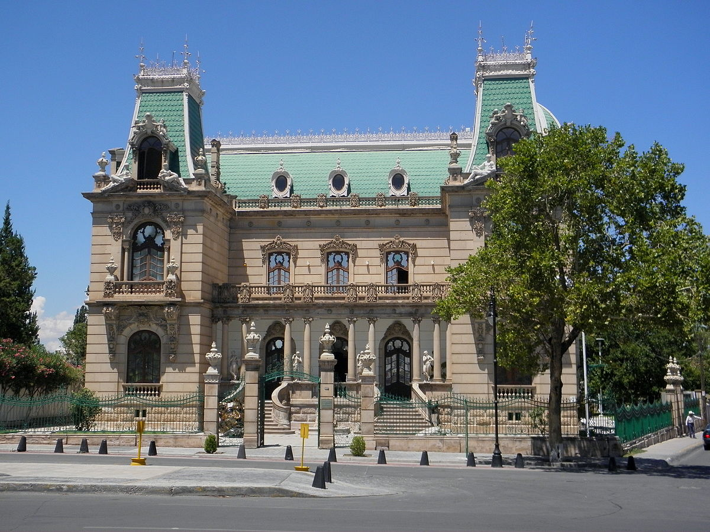

Este antiguo camino de Yucatán (nombrado así por Francisco Montejo, fundador de la Ciudad de Mérida) representaba el lujo de la aristocracia de los hacendatarios que se dedicaban a la producción de henequén en el siglo XIX.
Quinta Gameros, Ciudad de Chihuahua

3 Mayo de 2019
Creemos que en Chihuahua y en todo el norte no hay casa más hermosa e impresionante que la Quinta Gameros.
Por fuera, la fachada de colores oscuros, sus frontones y áticos llaman la atención por su sobriedad.